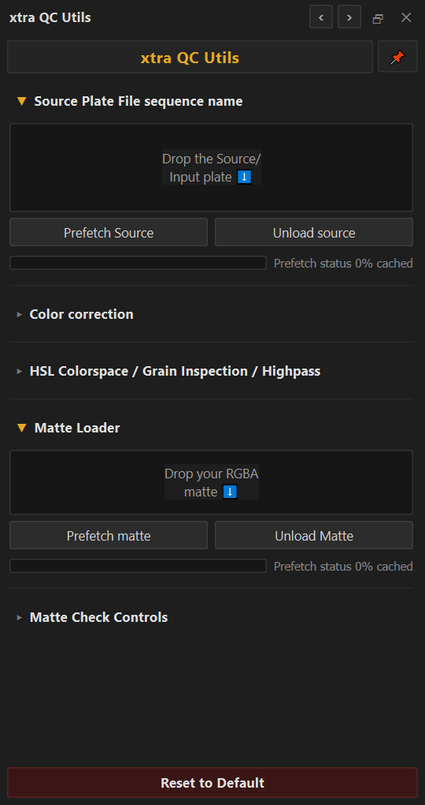
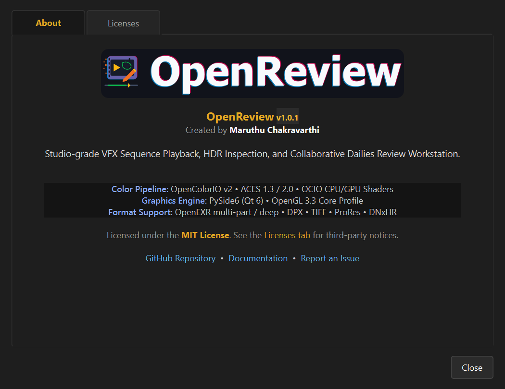

OpenReview One-on-One Feature Guide & Technical Manual
Welcome to the in-depth, one-on-one studio feature reference for OpenReview. Every capability across playback, caching, color science, technical compositing QC, and pipeline extensibility is detailed below following a rigorous 5-part specification: Studio Purpose, UI Access & Hotkeys, Step-by-Step Operator Guide, Technical Engine Mechanics, and Linked Visual Screenshot.
Domain 1: High-Performance Sequence & Video Playback Engine
Playback Engine & Media I/Osh010.####.exr), resolves the full continuous frame range (e.g. 1001–1100), mounts the sequence in the Sources Bin, and aligns the timeline transport automatically.openreview/core/sequence_parser.py and format-specific readers. Tokenizes shot prefixes, padding widths, and extensions, validating sequence continuity asynchronously without locking the UI..mov or .mp4 containers onto the viewport.PlaybackClock using Python's high-resolution time.monotonic() timer. Frame presentation timestamps are evaluated on each tick with sub-millisecond precision.openreview/core/async_source_loader.py.Domain 2: Monotonic Timeline Transport, JKL Shuttling & SMPTE Timecode
Timeline & Editorial NavigationQMediaPlayer.setPlaybackRate() to preserve audio pitch/sync.1024) and SMPTE broadcast timecode (e.g. 01:00:04:23).1042) and hit Enter. The playhead jumps instantly and the modal dismisses automatically.Domain 3: Two-Tier Memory Caching (RAM Ring Buffer & Persistent Disk Cache)
Memory Management & StorageDomain 4: Hardware OpenGL 3.3+ Viewport Canvas & Presentation Display
Hardware Accelerated ViewportRGBA16F/RGBA32F textures. Alternates between two PBOs using Direct Memory Access (DMA) to decouple texture upload from shader draw calls.glTexParameteri(GL_TEXTURE_2D, GL_TEXTURE_MAG_FILTER, GL_NEAREST).Domain 5: Multi-Stage GLSL Color Science, OpenColorIO v2 & 3D LUT Engine
Color Science & Shader Pipelineconfig.ocio file. Choose Input Space (e.g. ACEScg), Display Device (e.g. sRGB), and View Transform (e.g. ACES 1.0 SDR-video). Shaders update instantly on the GPU.color.rgb = color.rgb * uGain * exp2(uExposureEV);.if (uInvert) rgb = vec3(1.0) - rgb;.Domain 6: Visual Effects Technical QC & Inbuilt xtra-QC Diagnostic Suite
VFX Quality Control Diagnosticsopenreview/packages/builtin/comp_qc/hud_comp_qc.py. Sliders bind live uniforms into the viewport fragment shader and trigger reactive viewport redraws.Domain 7: Multi-Source Comparison, Interactive A/B Wipes & Difference QC
Comparison & Difference Modesdot(uv - wipePos, normal) > 0.0.abs(colorA - colorB) * uDiffBoost and 1.0 - abs(colorA - colorB) * uDiffBoost in the fragment shader.Domain 8: Multi-Layer Stacks, Layouts & Contact Sheet Generation
Multi-Layer Stacks & Contact SheetsDomain 9: Multi-Part OpenEXR AOVs & Stereoscopic 3D Workflows
OpenEXR AOVs & Stereoscopic 3Dspecular_indirect, depth.Z). The viewport instantly isolates and presents that pass.Domain 10: Vector Markup, Frame Annotations & Collaborative Review Notes
Annotations & Markup ToolsDomain 11: Sub-Frame Audio Synchronization & Remote Dailies Sync
Audio Engine & Collaborative SyncDomain 12: Python Scripting SDK, DCC Pipelines, Package Manager & Media Export
Automation & Pipeline Extensibilityfrom openreview.sdk import OpenReviewClient • JSON-RPC 2.0 TCP port 45124.client = OpenReviewClient(); client.open_media("/shots/sh010.####.exr"); client.play(). OpenReview executes the instruction immediately on the main workstation thread.13. Authoritative Complete Keyboard Shortcuts Matrix (All 85+ Actions)
The following table documents every action registered within OpenReview's shortcut engine, cross-referenced against Foundry Nuke, Autodesk RV, and 3DEqualizer standards:
| Domain | Action ID | Action Description | Default Shortcut & Key Aliases |
|---|---|---|---|
| Playback | playback.toggle | Toggle Play / Pause | Space |
| Playback | playback.shuttle_rev | Shuttle Reverse (-1x to -8x) | J |
| Playback | playback.shuttle_stop | Shuttle Stop (Halt Playhead) | K |
| Playback | playback.shuttle_fwd | Shuttle Forward (1x to 8x) | L / Shift+L |
| Playback | playback.step_fwd / step_back | Step 1 Frame Forward / Backward | Right / Left |
| Playback | playback.step_fwd_10 / step_back_10 | Step 10 Frames Forward / Backward | Shift+Right / Shift+Left |
| Playback | playback.first_frame / last_frame | Jump to First / Last Frame | Home / End |
| Playback | app.toggle_cache | Start In/Out Region RAM Caching | Shift+C |
| Timeline | timeline.toggle_timecode | Toggle SMPTE Timecode vs. Frame Count | Ctrl+T |
| Timeline | timeline.goto_frame | Open Frameless Go-To Frame Modal | Ctrl+G |
| Timeline | timeline.magnifier_toggle | Toggle Timeline Magnifier Mini-Ruler | Shift+T |
| Timeline | timeline.zoom_in / zoom_out | Zoom Timeline Scrubber In / Out | Ctrl+= / Ctrl+- |
| Marking | mark.in / mark.out | Set In Point / Set Out Point | [ / ] |
| Marking | mark.clear_in_out | Clear Both In and Out Points | \ |
| Marking | mark.clear_in / clear_out | Clear In Point / Clear Out Point | Alt+I / Alt+O |
| Marking | mark.bookmark_toggle | Toggle Frame Bookmark Flag | M |
| Marking | mark.bookmark_next / prev | Jump to Next / Previous Bookmark | Alt+Right / Alt+Left |
| Marking | mark.bookmark_segment_next / prev | Jump Next / Previous Bookmark Segment | PageDown / PageUp |
| Channels | channel.rgb | Restore Full RGB Channels | C |
| Channels | channel.red | Solo Red Channel as Monochrome | R |
| Channels | channel.green | Solo Green Channel as Monochrome | G |
| Channels | channel.blue | Solo Blue Channel as Monochrome | B |
| Channels | channel.alpha | Solo Alpha Channel as Monochrome | A |
| Channels | channel.luma | Solo Rec.709 Luminance Channel | Y |
| Color | color.invert_toggle | Toggle Full Display Invert Colors | Shift+I |
| Color | color.gain_up / gain_down | Adjust Linear Gain (+0.10 / -0.10) | + / - |
| Color | color.exp_up / exp_down | Adjust F-Stop Exposure (+0.25 / -0.25 EV) | Alt++ / Alt+- |
| Color | color.gamma_up / gamma_down | Adjust Gamma (+0.05 / -0.05) | Shift++ / Shift+- |
| Color | color.sat_up / sat_down | Adjust Saturation (+0.05 / -0.05) | Ctrl+Shift++ / Ctrl+Shift+- |
| Color | color.exp_reset | Reset Exposure to 0.0 EV | Ctrl+Alt+E / E |
| Color | color.gamma_reset | Reset Gamma to 1.0 | Ctrl+Alt+G |
| Color | color.reset_all | Reset All Color Grading Adjustments | Ctrl+Alt+R / Shift+Home |
| Color | color.adjustments | Open Interactive Color Adjustments HUD | / |
| Color | color.ocio_toggle | Toggle OpenColorIO Display Transform | Ctrl+Shift+O |
| View | view.fit | Fit Canvas to Viewport | F |
| View | view.fit_width | Fit Canvas to Viewport Width | Alt+F |
| View | view.actual_size | Zoom to 100% 1:1 Pixel Mapping | 1 |
| View | view.zoom_100 / 200 / 400 / 800 | Preset Zoom Scales (100% – 800%) | Ctrl+1 / Ctrl+2 / Ctrl+4 / Ctrl+8 |
| View | view.flop_x / flip_y | Flop Horizontal / Flip Vertical Mirror | Shift+X / Shift+Y |
| View | view.filter_toggle | Toggle Bilinear / Nearest Filtering | N |
| View | view.fullscreen | Toggle Fullscreen (Taskbar Hidden) | F12 |
| View | view.presentation | Toggle Clean Presentation Mode | Ctrl+P |
| View | view.matte_cycle | Cycle Aspect Masking Mattes | Ctrl+M |
| View | view.matte_opacity_cycle | Cycle Aspect Matte Opacity (25%-100%) | Shift+M |
| View | view.safe_guides | Toggle Title/Action Safe & Center Cross | Shift+G |
| View | view.onion_skin | Toggle Temporal Onion Skinning | Shift+O |
| View | view.pixel_inspector | Toggle Area Pixel Inspector | F5 / Alt+C |
| Wipe & QC | hud.wipe | Toggle A/B Split Wipe Mode | W |
| Wipe & QC | hud.wipe_flip_orientation | Flip Wipe Orientation (Left/Right) | Shift+W |
| Wipe & QC | hud.wipe_reset | Reset Wipe Position to 50% Center | Alt+W |
| Wipe & QC | app.toggle_comp_qc | Toggle xtra QC Utils Suite Dock & HUD | Q |
| Stacks | stack.cycle_fwd / cycle_bwd | Cycle Stack Layer Up / Down In-Place | Z / Shift+Z |
| Layers | hud.exr_layers | Open OpenEXR AOV Layer Selection HUD | Ctrl+L |
| Stereo 3D | hud.stereo_3d | Open Stereoscopic 3D Control HUD | Ctrl+Alt+S |
| Playlist | playlist.toggle | Toggle Sources & Session Manager Dock | ` (Backtick) |
| Versions | version.up / version.down | Pipeline Version Increment / Decrement | Alt+Up / Alt+Down |
| HUDs | hud.histogram | Toggle Real-Time RGB Histogram HUD | H |
| HUDs | hud.source_details | Toggle Source Media Details HUD | I |
| HUDs | hud.info_strip | Toggle Canvas Info Overlay Strip | Ctrl+I |
| HUDs | hud.audio_settings | Toggle Audio Settings & Mixer HUD | Ctrl+Shift+U |
| HUDs | hud.dailies_sync | Toggle Remote Dailies Sync Room HUD | Ctrl+Shift+D |
| HUDs | view.toggle_file_browser | Toggle Embedded File Browser Dock | Ctrl+B |
| HUDs | app.console_window | Open Diagnostic Console Logger | Ctrl+Shift+L |
| Annotations | annot.toggle_palette | Toggle Floating Vector Markup Palette | X |
| Annotations | annot.toggle_pen | Activate Freehand Pen Drawing Tool | D |
| Annotations | annot.undo / redo | Undo / Redo Vector Stroke on Frame | Ctrl+Z / Ctrl+Shift+Z |
| Annotations | annot.clear_frame | Clear All Annotations on Current Frame | Delete |
| Annotations | annot.next_keyframe / prev | Jump to Next / Previous Annotated Frame | . / , |
| Annotations | annot.manager | Open Multi-Frame Annotation Manager | Ctrl+Shift+A |
| Sessions | session.new | Create New Clean Session | Ctrl+N |
| Sessions | session.close | Close Current Session & Clear Memory | Ctrl+Shift+N |
| Sessions | session.open_media | Open Media File or Image Sequence | Ctrl+O |
| Sessions | session.open | Open Saved Review Session File (.ovr) | Ctrl+Shift+O |
| Sessions | session.save / save_as | Save Session / Save Session As | Ctrl+S / Ctrl+Shift+S |
| Export | session.export | Open Media Transcode & Sequence Export | Ctrl+Shift+E |
| Packages | app.package_manager | Open Package & Plugin Manager | Ctrl+Shift+P |
| Cache | media.reload_frame | Invalidate & Reload Active Frame | Ctrl+R |
| Cache | media.reload_sequence | Invalidate & Reload Active Sequence | Ctrl+Shift+R |
| Cache | app.clear_cache | Purge Active Source RAM Cache | Ctrl+Shift+C |
| Cache | app.clear_all_cache | Flush Entire Workspace RAM/Disk Cache | Ctrl+Delete |
| App | app.preferences | Open Workstation Preferences Dialog | Ctrl+, |
| App | app.about | Open Studio About & License Inspector | F1 |
| App | app.escape | Cancel Active Tool / Dismiss Floating HUD | Escape |
| App | app.quit | Terminate Application Cleanly | Ctrl+Q |
14. Visual Screenshot Showcase (All 36 Official Figures)
The following gallery features all 36 high-resolution UI captures generated directly from running OpenReview workstation instances:
1. Primary Studio Workspace Overview

Top bar, viewport, timeline, sources dock, and live pixel inspector.
2. Workspace with Pipeline File Browser

Embedded filesystem explorer dock mounted alongside sequence tree.
3. Top Control Bar

Exposure, gain, channel soloing, framing, and mode toggles.
4. Timeline Transport Dock

Monotonic timecode scrubber, In/Out marks, bookmarks, and JKL buttons.
5. Status Bar Telemetry

64-bit float linear RGBA, 8-bit sRGB, HSV, and Luma Y.
6. Sources & Session Dock

Hierarchical session graph with stacks, comparisons, and active clip.
7. File Browser Dock

Rapid folder navigation with sequence folding and bookmarks.
8. Floating Vector Markup Palette

Brush, lines, arrows, rectangles, text callouts, and swatches.
9. xtra QC Utils Suite (Comp QC)

Technical comp QC: softclip knee, grain, highpass, black level, and HSL.
10. Color Adjustments HUD

Master & per-channel Gamma, Gain, Saturation, and Hue rotation.
11. OpenColorIO Config HUD

OCIO v2 config loader, display devices, and view transforms.
12. A/B Split Wipe Controller HUD

Wipe position, 360-degree angle dial, and difference boost.
13. Real-Time RGB Histogram HUD

Real-time luminance and individual RGB channel distribution graph.
14. Color Inspector & Region Sampler HUD

Min, max, mean, and median statistics with preview swatch.
15. Media Stacking & Layouts HUD

Stack layer order, blend mode, and contact sheet grid layout.
16. OpenEXR Multi-Layer Passes HUD

Multi-part AOV browser isolating beauty, diffuse, spec, and depth.
17. Stereoscopic 3D HUD

Red-cyan anaglyph, interlaced, side-by-side, and parallax offset.
18. Annotation & Review Notes Manager HUD

Multi-frame review note index with PDF/PNG export buttons.
19. Source Media Technical Details HUD

Codec, resolution, color space tags, timecode, and EXR metadata.
20. Audio Settings & Mixer HUD

Audio waveform envelope, peak dB meter, volume faders, and slip.
21. Remote Dailies Sync Room HUD

Multi-user room connection, participant list, and lockstep sync.
22. Studio About & License Inspector Dialog

Author Maruthu Chakravarthi, core telemetry, and full open-source licenses.
23. Diagnostic Console Window

Real-time logging across app, gpu, cache, ocio, and reader.
24. Media Transcode & Sequence Export Dialog

Transcode to ProRes, DNxHD, H.264, EXR, and DPX with scaling options.
25. Package & Plugin Manager Dialog

Enable, disable, and configure extensions including xtra-qc-Utils.
26. Process Info & Performance Telemetry

Live RAM cache budget gauges, GPU vendor, and measured FPS.
27. Frameless Go-To Frame Modal

Quick numeric jump modal with automatic range clamping.
28. Preferences: General & Playback

Default framerates, loop behaviors, and UI theme options.
29. Preferences: GPU Acceleration

OpenGL 3.3 Core Profile and asynchronous PBO DMA streaming toggles.
30. Preferences: Two-Tier Caching

RAM ring buffer limit (1 GB - 64 GB) and persistent disk cache path.
31. Preferences: Keyboard Shortcuts

Searchable keybinding customization editor with conflict checking.
32. Viewport: A/B Split Wipe Mode

Angled wipe divider comparing comp iteration against reference plate.
33. Viewport: Vector Markup & Color HUDs

Anti-aliased arrow, bounding rectangle, and text callout on canvas.
34. Viewport: Out-of-Range High-Contrast Zebra

Magenta overlay for blown highlights and Cyan for crushed blacks.
35. Viewport: Safe Area Guides & Theatrical Mattes

2.35:1 theatrical letterboxing with Action/Title safe and center cross.